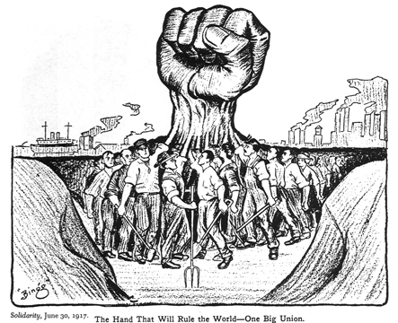

En Mexico se formaron organizaciones como el Gran Circulo de Obreros (1870).
Se radicalizaron huelgas como la de los barreteros de Pachuca (1872).
Se impulsaron intentos para sindicalizar.
Muchas de estas protestas fueron reprimidas con violencia, persecucion y encarcelamientos.
Sin embargo sentaron las bases para la creacion de los sindicatos mexicanos y las leyes laborales del siglo XX.
Desde la epoca prehispanica y durante la colonia, las comunidades indigenas administraban la tierra de forma comunal.
Impuso la desamortizacion de las tierras con el objetivo de modernizar la economia.
En lugar de beneficiar a pequeños propietarios, favorecio la creacion de grandes latifundios y el despojo de tierras.
Muchos campesinos quedaron sometidos al peonaje por deudas, sistema que los obligaba a trabajar para pagar prestamos, heredaban su deuda a sus descendientes, no recibian salario, les otorgaban creditos en las tiendas de raya y se mantenian endeudados de por vida.
Estas protestas originaron las bases de la revolucion mexicana de 1910, bajo el lema Tierra y Libertad.
